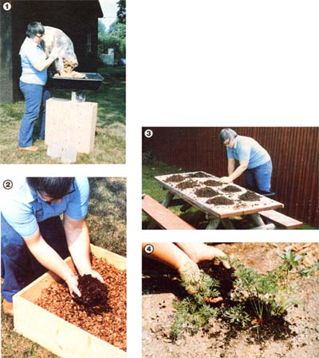

PHOTOS BY MARY FRANCES FENTON
[1]Shreded corrugated bedding is weighed. [2] Red wigglers are added to the in.[3] Worms and casting are sorted and harvested on a plastic-covered tale.[4] Vermiompost is used as a top-dressing for young carrots.